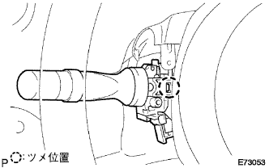

ステアリングコラムASSY 取り付け |
| 1. ステアリング コラムASSY取り付け |
 |
ステアリングコラムASSYを手前から差し込み、ステアリングコラムクランプをインストルメントパネルリインホースメントASSYにクランプする。
ボルト３本で、ステアリングコラムASSYを取り付ける。
ステアリングインターミデイエイトNo.3シヤフトとステアリングスライデイングヨークの合わせマークを合わせ取り付ける。
ステアリングスライデイングヨーク両端のボルトを本締めする。
各コネクタを接続する。
ワイヤハーネスをステアリングコラムチユーブにクランプさせる。
| 2. フロントタイヤ直進状態確認 |
フロントタイヤが直進状態になっていることを確認する。
| 3. コラムシフト パーキング ロックケーブルASSY接続 |
ボルトで、パーキングロックケーブル(ペダル側)を仮付けする。
パーキングロックケーブルをコラムASSYに接続する。
パーキングロックケーブル点検·調整(要領は
参照)後にボルト締め付ける。
| 4. コラムシフト トランスミッション コントロールケーブルASSY接続 |
エンジン側からコントロールケーブルを通し、ナットでブラケットを取り付ける。
クリップで、コントロールケーブルをコントロールケーブルブラケットに取り付ける。
ナットで、コントロールケーブルをトランスアクスルに接続する。
 |
新品のクリップをケーブルブラケットに取り付け、コントロールケーブルをコラムASSYに取り付ける。
シフトレバーをNレンジにしてPレンジ側へ押し付け、コントロールケーブルエンド部を引っ張り、バックラッシュを無くした状態でコントロールケーブルをベルクランクにナットで取り付ける。
| 5. ステアリングコラムホールカバー プレート取り付け |
 |
クリップ2個でステアリング コラム ホールカバープレートを取り付ける。
| 6. ウインドシールド ワイパ スイッチASSY取り付け |
|  |
ツメをかん合させてウインドシールドワイパスイッチを取り付ける。
コネクタを接続する。
| 7. ヘッドランプ デイマ スイッチASSY取り付け |
 |
ツメをかん合させてヘツドランプデイマスイツチASSYを取り付ける。
コネクタを接続する。
| 8. スパイラル ケーブルSUB-ASSY取り付け |
ターンシグナルスイツチをニユートラル位置にする。
ツメのかん合3箇所を合わせて、スパイラルケーブルを取り付ける。
エアバツグ用コネクタおよびコネクタを接続する。
| 9. スパイラルケーブルセンタリング |
IGスイツチがOFF(LOCK)になっていることを確認する。
バツテリーのマイナスターミナルがはずしてあることを確認する。
 |
スパイラルケーブルを反時計方向にロツクするまで回す。
 |
スパイラルケーブルをロツクした位置から時計方向に2.5回転戻し、図のセンターマークを合わせる。
| 10. シフトレバー位置点検 |
シフトレバーをNレンジから各レンジにシフトする。このときシフトレバーが円滑に操作でき、各レンジに節度よく動き、ポジションインジケータが表示しシフトレバー位置が一致していることを確認する。
シフトレバーを手前に引いたときのみP、R、Lの各レンジにシフトできることを確認する。
エンジンを始動し、Dレンジにシフトしたとき車両が前進し、Rレンジにシフトしたときブザー音がして車両が後退することを確認する。
| 11. シフトレバー位置調整 |
コントロールシャフトレバーのナットをはずし、コントロールケーブルを切り離す。
コントロールシャフトレバーを反時計方向へ止まるまで回し、そこから2段階戻した位置(Nレンジ)にする。
 |
図のように、シフトレバーをNレンジにシフトし、Rレンジ側に押し付けた状態で、コントロールケーブルを取り付け、ナットで締付ける。
調整後、操作具合および作動を点検する。
| 12. シフトロック作動点検 |
シフトレバーをPレンジにする。
イグニションスイッチをLOCKにする。
シフトレバーを操作したときPレンジ以外にシフトできないことを点検した後、イグニションスイッチをACCまたはONにしブレーキペダルを踏んだとき、Pレンジ以外にシフトできることを点検する。
| 13. キーインタロック作動点検 |
イグニションスイッチをACCにする。
ブレーキペダルを踏んで、シフトレバーをPレンジ以外にシフトする。
イグニッションキーがLOCK位置に回せないことを点検する。
シフトレバーをPレンジにシフトし、イグニッションキーをLOCK位置に回しイグニッションキーが抜けることを点検する。

| 14. ステアリングコラム カバー取り付け |
 |
スクリュ3本でステアリングコラムカバーを取り付ける。
| 15. ステアリング ホイールASSY取り付け |
ステアリングホイールASSYの合わせマークをステアリングメインシヤフトASSYの合わせマークに合わせてナットで取り付ける。、
| 16. ステアリングホイール位置点検 |
| 17. ホーン ボタンASSY取り付け |
トルクスソケットレンチ(T30)を使用して、トルクスボルト2本を締め付ける。
| 18. インストルメントパネルフィニッシュ パネル LWR取り付け |
 |
各コネクタおよび、フードオープナを接続し、ツメ5箇所のかん合を合わせクリップ<ａ>2個でインストルメントパネルフィニッシュパネルLWRを取り付ける。
| 19. インストルメントパネルフィニッシュ パネル LWR CTR取り付け |
 |
スクリュ3本でインストルメントカップホルダを取り付ける。
パワーアウトレットソケットのコネクタを接続する。
ツメ8箇所のかん合を合わせ、クリップ<ｃ>2個でインストルメントパネルフィニッシュパネル LWR CTRを取り付ける。
| 20. バッテリマイナスターミナル接続 |
| 21. エアバッグウォーニングランプ点検 |
参照)